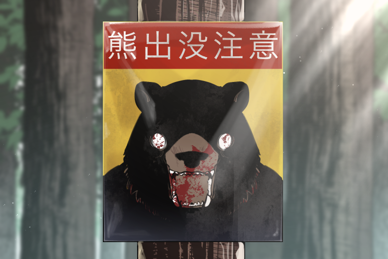
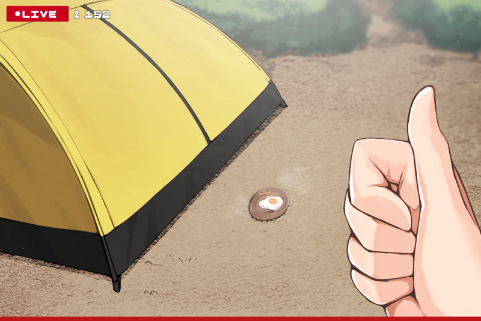
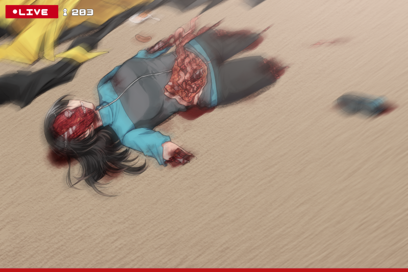
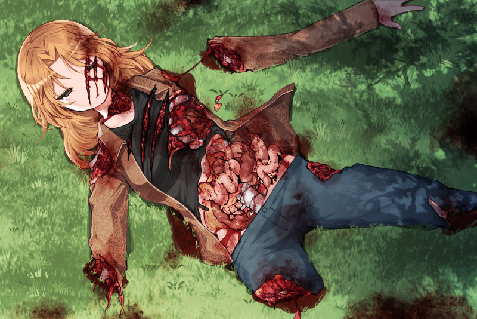
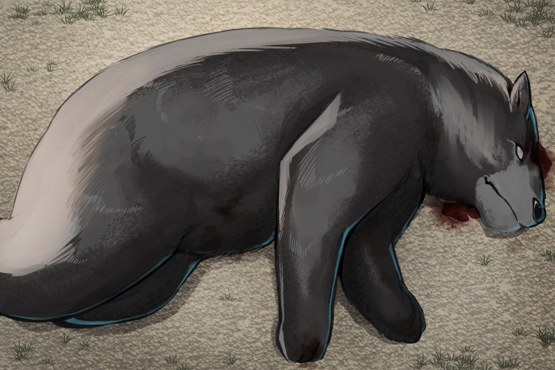

然別湖ヒグマ配信死亡事件
概要
然別湖ヒグマ配信死亡事件（しかりべつこヒグマはいしんしぼうじけん）は、2024年9月12日、北海道鹿追町の然別湖周辺で発生した事故である。
キャンプ中にライブ配信を行っていた20代女性2人がヒグマに襲われて死亡。
この事件では、配信中のカメラにヒグマが映り込む場面や、被害者の悲鳴、襲撃の音声などがリアルタイムで記録されており、SNS上で大きな波紋を呼んだ。
背景
被害者の2人は北海道内に在住していた20代の女性で、アウトドアやキャンプをテーマに共同で配信活動を行っていた。事件当日は、然別湖北岸の旧野営場跡地（現在は閉鎖）でキャンプ配信を実施していた。
然別湖周辺は大雪山国立公園内に位置し観光地として知られる一方、周辺の登山道や山林では野生のヒグマの目撃例も多く、地元自治体による注意喚起も繰り返されていた。

事件の経過
9月12日19時ごろから配信が開始され、AとBは焚き火を囲みながら調理や雑談を行っていた。
20時10分頃、配信カメラに大型のヒグマとみられる黒い影が数秒間映り込んだ。ヒグマは一度、近くの林に姿を見せ、 焚き火の明かりを避けるようにこちらをうかがっていたが、ライトを向けると山中へ戻っていった。
視聴者からは「マジで帰れ」「ヤバいぞ」「通報した」といったコメントが殺到したが、女性A（仮名）は「やば！絶対バズるって！やべーw」と笑いながら配信を続行。
これに対し、女性B（仮名）は「もう帰ろうよ」「ほんと怖い」と動揺を見せ、「帰る・帰らない」を巡って2人の間で口論が発生した。
最終的にBは「私はテントにいるから」とその場を離れ、数メートル離れた場所に設営された自分のテントへ移動。
Aはカメラに向かって「じゃあここにご飯置いとくわ。もしクマ来て食べたらアツいよなw」と言い、Bのテント前に調理した料理の皿を置く行動をとった。

その後、Aは配信を継続したままキャンプ場周辺を一人で歩いて離れた。しばらく周囲の林道や風景を撮影しながら移動していたが、数十分後に「今、声しなかった？」とつぶやき、慌ててテント方向へ戻っている様子が記録されている。
帰還直後の映像には、Bのテント付近で倒れているBの身体が確認され、腹部が裂かれ、四肢の一部が欠損している状態であった。

動揺したAは「マジでやばい」「やばいって」と声を上げながら配信を継続し、その場を走って離脱した。
配信映像はライトに照らされた林道を揺れながら進む様子が映され、「無理無理無理」「早く車戻んなきゃ」「なんで置いたのあそこに…」などと、Aが錯乱気味に発言する様子が記録された。
数十秒後、カメラの奥に黒い影が一瞬映り込み、Aが「えっ？今いた？」「やばいってマジで無理！」と悲鳴を上げると、配信画面が大きく揺れ、Aの叫び声とともにスマートフォンが地面に落下したとみられる映像に切り替わった。
地面を映したままの状態でカメラはしばらく動き続け、「痛い！やめて！」「誰か助けて！」「助けて！誰か来て！」といったAの悲痛な叫び声が断続的に収録された。
叫び声の合間には唸り声や衣服が裂けるような音、肉を噛むような音などが混じっていた。
配信はスマートフォンが地面に落下した後もしばらく継続されており、Aの悲鳴や助けを求める声が音声として記録された。
最終的には通信の切断、もしくは端末の破損により、21時50分頃に配信は自動的に終了した。

ヒグマの射殺
警察と消防が夜間のうちに現地に出動し、翌13日早朝に2人の遺体をそれぞれ発見。
事件から約36時間後、現場周辺を警戒していた北海道猟友会のハンターが、然別湖東側の林道付近で大型の雄ヒグマ（体長約190cm）を発見し射殺。
胃の内容物からは人間の皮膚片や衣類の繊維が確認され、DNA鑑定により被害者のものと一致した。
